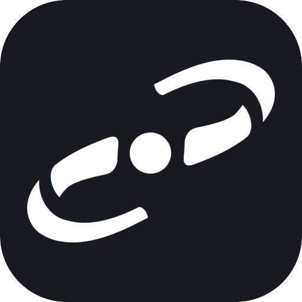

通过头脑风暴澄清目标、边界和方案，再拆成可执行且可验证的实施步骤。
澄清 · 方案 · 计划
SUPERPOWERS
把软件开发变成可验证流程
从需求澄清、实施计划和测试驱动开发，到系统调试、并行协作、代码审查和分支收尾，覆盖完整研发周期。
14 个工作流 Skill测试驱动开发计划与审查闭环
01 / 核心能力
关键阶段都有明确检查点
适合复杂开发任务和需要持续验证、分工与复查的代码变更。
使用测试驱动开发、根因分析和条件等待，避免凭猜测修改或只修症状。
TDD · 根因 · 验证组织子代理任务、请求和接收代码审查，并完成 worktree 与开发分支收尾。
分工 · Review · Git02 / 工作方式
先设计，再实现，最后证明
- 01形成共识
明确需求、约束、方案和验收标准。
- 02分步实现
按计划开发，用测试和证据驱动判断。
- 03审查收尾
复查代码、验证结果并整理分支交付。
03 / 示例请求
可以直接这样说
“把这个需求整理成可执行的开发方案。”
“使用测试驱动开发实现这个功能。”
“系统排查这个失败，并证明修复有效。”